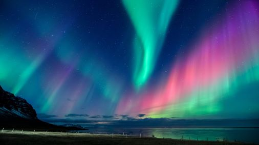
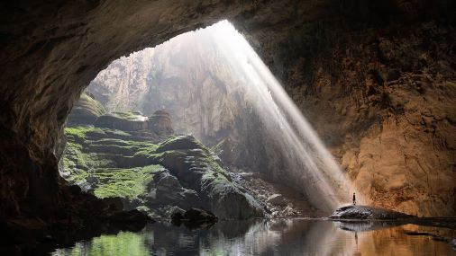
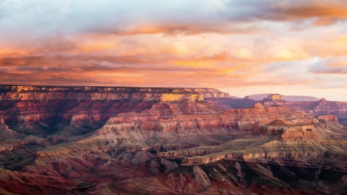

Yosemite is one of the most beautiful pieces of nature that earth has
to offer. It has plenty of different animals, trees, and waterfalls.
It is a place that I have wanted to visit for a long time. Soon I will
be able to, but for now, I will do my research and prepare in advance
to create one of life's best memories.

Iceland Aurora Borealis
Iceland is a place that I have wanted to visit since I was a young
kid. The aurora borealis is truly a sight to behold. It is also a nice
change from this dry Arizona heat with warm winters. The cities in
Iceland also have cool architecture; I have yet to see something that
resembles their old buildings in person.

Sơn Đoòng cave
Sơn Đoòng, the stunning cave of Vietnam, is a place that should be on
everyone's bucket list. The cave is not only surrounded by
breathtaking nature views, but it also has remarkable bodies of water.
It is a cave that is so popular that there are limitations to how many
people can attend tours per year, and I have every intention of
getting on that list someday.

Grand Canyon
Despite Living in the same state as the Grand Canyon, I have only ever
been there once as a child, so that memory has long since then faded
away. Soon I will see the view of a lifetime with the beautiful
gradients of red and a sunset that could just about bring anyone to
their knees.